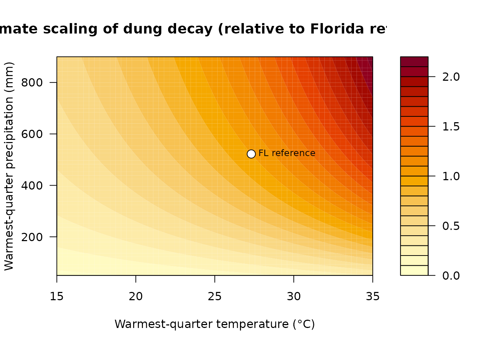
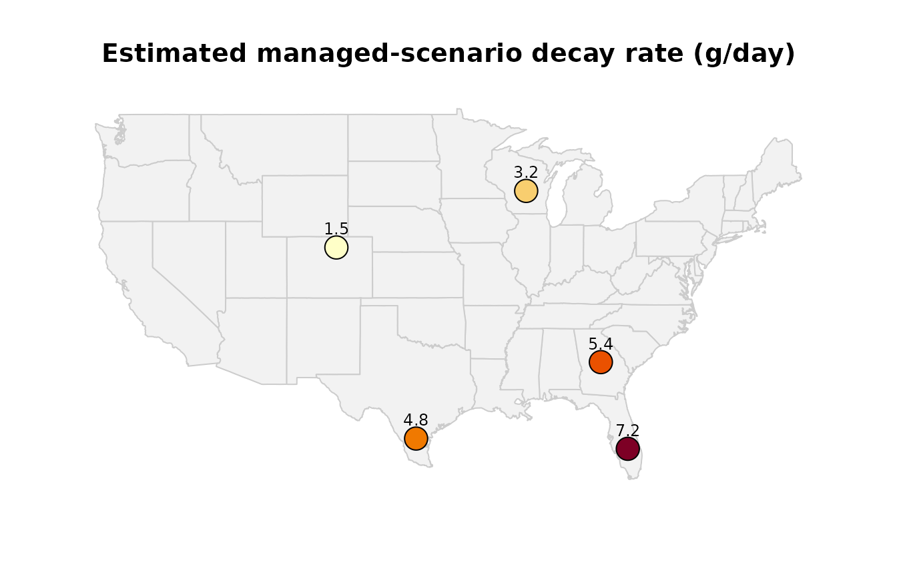

What this package does
RancheR estimates the annual economic benefit
that dung beetles provide to a cattle operation. Dung beetles
break down and bury dung pats; without them, pats sit on the pasture for
far longer, fouling grass that cattle then refuse to graze. By
accelerating pat decay, beetles free up grazing area — effectively
raising the carrying capacity of a ranch.
The package turns that ecological service into dollars, using empirical pat-decay data from Central Florida pasture research (Stanbrook-Buyer, Bhat & King, in preparation). It contains the same calculations that power the RancheR Shiny app, exposed as plain R functions so you can script them, batch them, or build your own tools on top.
The model in brief
The calculation follows four steps:
- Decay rate. Each beetle-abundance scenario has an empirical pat decay rate (grams/day). More beetles → faster decay.
- Fouled pasture. Faster decay means fewer grazing-area units (GAU) of pasture are fouled per cow per year. The package stores the empirically measured fouled area for each scenario.
- Avoided fouling. Comparing a scenario against the no-beetle baseline gives the GAU of fouling avoided thanks to beetles.
- Dollar value. Avoided fouling is converted to an equivalent number of additional cows the freed pasture can support, then multiplied by ranch-level income per cow.
A first estimate
The main function is calc_dung_beetle_benefit(). The
only argument you must supply is the herd size; everything else has a
sensible paper-derived default.
res <- calc_dung_beetle_benefit(
num_cattle = 100,
scenario = "Managed (low beetle abundance)"
)
res
#> $annual_value
#> [1] 454.8576
#>
#> $additional_cows
#> [1] 0.5601695
#>
#> $days_to_decay
#> [1] 112.61
#>
#> $decay_rate
#> [1] 7.23
#>
#> $fouled_used
#> [1] 31820
#>
#> $avoided_gau_per_cow
#> [1] 20272The return value is a list. The two headline numbers are usually:
res$annual_value # estimated annual benefit, in dollars
#> [1] 454.8576
res$additional_cows # equivalent extra cows the freed pasture supports
#> [1] 0.5601695The three scenarios
There are three beetle-abundance scenarios. You can list them with
dung_scenarios():
dung_scenarios()
#> [1] "No beetles (low decay rate)" "Managed (low beetle abundance)"
#> [3] "Natural (high beetle abundance)"Their decay rates (grams of dung removed per day) are:
sapply(dung_scenarios(), scenario_decay_rate)
#> No beetles (low decay rate) Managed (low beetle abundance)
#> 3.75 7.23
#> Natural (high beetle abundance)
#> 10.73Because more beetles remove dung faster, the economic benefit rises from the “no beetles” baseline up to the “natural” high-abundance case. Here is the benefit for a 100-head operation under each scenario:
herd <- 100
benefits <- sapply(dung_scenarios(), function(s) {
calc_dung_beetle_benefit(num_cattle = herd, scenario = s)$annual_value
})
data.frame(
scenario = dung_scenarios(),
annual_value = round(benefits, 2),
row.names = NULL
)
#> scenario annual_value
#> 1 No beetles (low decay rate) 0.00
#> 2 Managed (low beetle abundance) 454.86
#> 3 Natural (high beetle abundance) 673.74The “no beetles” scenario is the baseline, so its avoided fouling — and therefore its benefit — is zero by construction.
Tailoring the estimate to your ranch
Every parameter can be overridden. For example, a larger operation with a higher income per cow and slightly more pasture required per head:
calc_dung_beetle_benefit(
num_cattle = 500,
scenario = "Natural (high beetle abundance)",
income_per_cow = 900,
acre_per_cow = 2.6
)$annual_value
#> [1] 3518.358The benefit scales linearly with herd size, so doubling the cattle doubles the estimate:
a <- calc_dung_beetle_benefit(250, "Natural (high beetle abundance)")$annual_value
b <- calc_dung_beetle_benefit(500, "Natural (high beetle abundance)")$annual_value
c(herd_250 = a, herd_500 = b, ratio = b / a)
#> herd_250 herd_500 ratio
#> 1684.344 3368.688 2.000Custom decay rates
If you have your own measured decay rate, pass it via
decay_override. When you do, the fouled-area is scaled from
the no-beetle baseline by relative decay time rather than read from the
empirical scenario table — letting you explore conditions between or
beyond the measured scenarios (e.g. warm, wet weather speeds decay;
cool, dry weather slows it).
calc_dung_beetle_benefit(
num_cattle = 100,
scenario = "Managed (low beetle abundance)",
decay_override = 9.5
)$annual_value
#> [1] 707.4474Inspecting the underlying constants
All paper-derived defaults and empirical values live in one
documented object, rancher_constants, so nothing is hidden
inside the functions:
rancher_constants
#> $initial_pat_g
#> [1] 814.17
#>
#> $decay_no_beetles
#> [1] 3.75
#>
#> $decay_managed
#> [1] 7.23
#>
#> $decay_natural
#> [1] 10.73
#>
#> $income_per_cow
#> [1] 812
#>
#> $acre_per_cow
#> [1] 2.45
#>
#> $gau_per_acre
#> [1] 4046.86
#>
#> $fouled_gau_per_cow_year
#> No beetles (low decay rate) Managed (low beetle abundance)
#> 52092 31820
#> Natural (high beetle abundance)
#> 22065
#>
#> $ref_lat
#> [1] 27.13014
#>
#> $ref_lon
#> [1] -81.1979
#>
#> $ref_temp_warmq_C
#> [1] 27.31
#>
#> $ref_precip_warmq_mm
#> [1] 522Batch analysis example
Because the functions are plain R, scaling up to many ranches is straightforward. Here we estimate the benefit across a range of herd sizes under the natural scenario:
herds <- c(50, 100, 250, 500, 1000)
sapply(herds, function(n) {
round(calc_dung_beetle_benefit(n, "Natural (high beetle abundance)")$annual_value, 2)
})
#> [1] 336.87 673.74 1684.34 3368.69 6737.38Adjusting decay rates for your own climate
The decay rates above were measured at a single Central Florida site (27.1301368, -81.1978989) during summer, when temperature and rainfall strongly drive dung decomposition. Decay is slower in cooler or drier regions and faster in hotter, wetter ones, so a ranch elsewhere needs locally adjusted rates.
estimate_local_decay() does this by scaling the
reference rates by how a location’s climate differs from the Florida
site. Climate comes from two WorldClim “bioclim” variables
chosen to match the summer collection window:
- BIO10 — mean temperature of the warmest quarter (°C)
- BIO18 — precipitation of the warmest quarter (mm)
Temperature acts through a Q10 response (decay
changes by a factor q10, default 2, per 10 °C — a standard
description of biological decomposition), and moisture through a
saturating response (decay rises with rainfall but with
diminishing returns). Both are normalised to 1 at the reference climate,
so the model reproduces the measured rates exactly at the Florida
site.
A note on the method. Because decay was measured at only one location, this is a calibrated, literature-grounded scaling — not a regression fitted to multi-site data. The
q10andprecip_half_satarguments are exposed so the relationship can be tuned or replaced as local field data become available.
Looking up climate automatically
Given a latitude and longitude, estimate_local_decay()
downloads (and caches) the WorldClim layers and returns climate-adjusted
decay rates for all three scenarios. This requires the
terra package and an internet connection on first use:
est <- estimate_local_decay(lat = 31.5, lon = -97.1) # central Texas
est$decay_ratesSupplying climate directly
If you already know the warmest-quarter temperature and precipitation
(or want to work offline), pass them in via climate — no
download needed:
est <- estimate_local_decay(
lat = 44.0, lon = -89.5, # central Wisconsin
climate = c(temp_warmq_C = 20.3, precip_warmq_mm = 290)
)
est$climate # climate used
#> temp_warmq_C precip_warmq_mm
#> 20.3 290.0
est$climate_factor # combined scaling vs. the Florida reference
#> [1] 0.4393898
round(est$decay_rates, 2)
#> No beetles (low decay rate) Managed (low beetle abundance)
#> 1.65 3.18
#> Natural (high beetle abundance)
#> 4.71The cooler, drier Wisconsin climate scales decay below the Florida baseline.
Feeding a local rate into the economic model
Pass a climate-adjusted rate straight into
calc_dung_beetle_benefit() as the
decay_override:
managed_rate <- est$decay_rates[["Managed (low beetle abundance)"]]
calc_dung_beetle_benefit(
num_cattle = 200,
scenario = "Managed (low beetle abundance)",
decay_override = managed_rate
)$annual_value
#> [1] 0You can also inspect the raw bioclim values for a point with
bioclim_warmest_quarter(lat, lon).
Visualising the climate response
The scaling factor is easiest to read as a surface over the two bioclim variables. The contours below show how decay speeds up toward the warm, wet corner and slows toward the cool, dry corner; the white point marks the Florida reference, where the factor is exactly 1.
temps <- seq(15, 35, length.out = 60) # warmest-quarter temperature (deg C)
precs <- seq(50, 900, length.out = 60) # warmest-quarter precipitation (mm)
grid <- outer(temps, precs, function(t, p) climate_decay_factor(t, p)$climate_factor)
filled.contour(
temps, precs, grid,
color.palette = function(n) hcl.colors(n, "YlOrRd", rev = TRUE),
xlab = "Warmest-quarter temperature (°C)",
ylab = "Warmest-quarter precipitation (mm)",
main = "Climate scaling of dung decay (relative to Florida reference)",
plot.axes = {
axis(1); axis(2)
points(rancher_constants$ref_temp_warmq_C,
rancher_constants$ref_precip_warmq_mm,
pch = 21, bg = "white", cex = 1.6)
text(rancher_constants$ref_temp_warmq_C,
rancher_constants$ref_precip_warmq_mm,
"FL reference", pos = 4, cex = 0.8)
}
)
Mapping a few locations
Applied geographically, the same model gives a decay rate for any
ranch. The map below places a handful of sites and labels each with its
estimated managed-scenario rate (g/day). The warmest-quarter climate
values here are illustrative approximations for
demonstration — in practice estimate_local_decay(lat, lon)
looks up the real WorldClim values for you.
sites <- data.frame(
name = c("FL reference", "S. Texas", "Georgia", "Wisconsin", "Colorado"),
lon = c(-81.20, -98.49, -83.40, -89.50, -105.00),
lat = c( 27.13, 27.80, 32.80, 44.00, 40.30),
temp_warmq_C = c( 27.31, 29.50, 26.80, 20.30, 17.50),
precip_warmq_mm = c( 522, 210, 330, 290, 140)
)
sites$decay_managed <- vapply(seq_len(nrow(sites)), function(i) {
estimate_local_decay(
lat = sites$lat[i], lon = sites$lon[i],
climate = c(temp_warmq_C = sites$temp_warmq_C[i],
precip_warmq_mm = sites$precip_warmq_mm[i])
)$decay_rates[["Managed (low beetle abundance)"]]
}, numeric(1))
pal <- hcl.colors(100, "YlOrRd", rev = TRUE)
cols <- pal[cut(sites$decay_managed, breaks = 100, labels = FALSE)]
maps::map("state", fill = TRUE, col = "grey95", border = "grey80")
points(sites$lon, sites$lat, pch = 21, bg = cols, cex = 2.4)
text(sites$lon, sites$lat, sprintf("%.1f", sites$decay_managed),
pos = 3, cex = 0.75)
title("Estimated managed-scenario decay rate (g/day)")